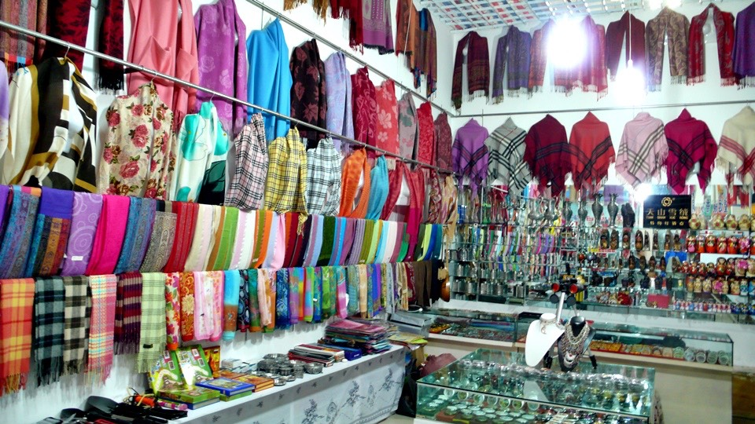
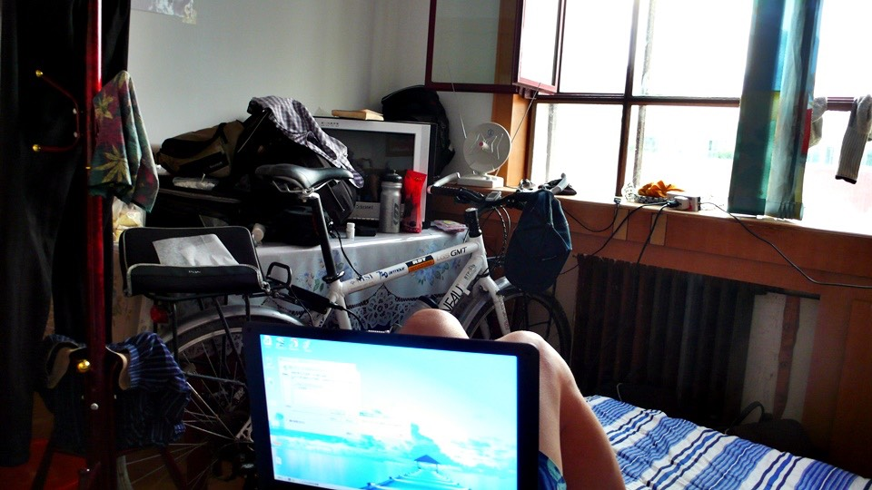

Waking up with a strange feeling in 62 Tuan, it was not a cold or a headache, but a toothache.
To make it accurate, I had two lumps on the inner lower gum in the right side of my mouth, no tooth pain but mouth pain and lump pain.
In order to avoid the lumps, I could not bite down, which told me a cruel fact that I won’t be able to eat.
Stopping by 62 Tuan was simply for rest and recovery.
Nothing particular was planed but finding some time to go to Huoerguosi for maps and money exchange.
I stayed in an Internet café when the sun was intense in the morning.
I felt hungry but could not eat so I bought a bread-like sweet sesame twist and swallowed it with juice.
I thought it would be ok if it was not a toothache and the swelling should go down soon.
Fleck and Jacquin sent me an email today. I was so glad to hear from them.
After we hugged goodbye, they were heading for the gas station that I told them where was about 20 km away.
They camped on the floor in the gas station at night, eating gas station food and drinking two liters of Pepsi.
They are cute dad and mom. I won’t call them elders even they are in their sixties, because they still have young passion and energy.
Wishing them good luck and arriving Tibet safely. It is never too late to start an adventure as long as we have dreams.
In the afternoon, my mouth swelling was getting worse.
I could not talk properly so nobody seemed to understand what I was saying.
I wanted to see a doctor, but there was no hospital in 62 Tuan.
The hotel lady suggested buying medicine from the pharmacy next door.
Being not able to speak clearly,I mumbled what medicine to buy for toothache.
Without any checkup, I was given three different drugs to choose from,
painkiller, antibiotic and something that even the pharmacist did not know.
Pondering real quick, I picked out the antibiotic. Out of expectation, it was cheap – 3 RMB only.
Hopefully, it really worked on me and reduced swelling. Please, don’t let me get the counterfeit drugs…
Staying in an internet café for the whole day would be too depraved.
I got to run a few errands first and then checked out the town. Meanwhile, the sun was way too intense and scorching hot.

Wandering around the market in the hot sun was like melting chocolate.
I had not eaten any real meal yet, but under current condition what I could eat.
I bought two large sponge cakes at the bakery stall and perhaps did not have to chew at them.
Many stalls by the roadside were selling shaved ice.
Not having shaved ice for quite some time, I really needed my shaved ice fix on such a hot day.
The shaved ice with pineapple was made in the opposite way than Taiwan where it started with ice then topped with ingredients.
Here, it was made with the ingredients at the bottom of very coarsely shaved ice.
I carefully tried a bite, which did not hurt my lumps. Then I happily started eating.
In the meantime, my watch thermometer showed the temperature was going up to 40 degrees Celsius.
After the shaved ice I walked back to the hotel in the stinking hot sun.
If it was so hot here, was the same heat waiting for me in Kazakhstan as well?
I’d better well plan the routes and water supply for the coming trip. It was no good to get dehydrated.
Back to the hotel, I washed the dirty clothes being worn for three days and then took a nap.
I would be heading for Huoerguosi when the sun was getting less intense.
Still hot at 8:00 in the afternoon, would it cool down after the sun came down?
Putting on my coat and hat, I was off in the late afternoon sun again.
It was about time for sunset but the sun was still fierce.
I went to Huoerguosi by public bus, 1 RMB for one way – very convenient, and no way to ride in such hot weather.
When arriving in Huoerguosi, I would be asking people where to buy maps.
I got off at the Huoerguosi main bus terminal where the largest bookstore of Huoerguosi was nearby.
The largest bookstore looked like a small countryside bookstore and did not carry maps.
Strangely, selling maps of adjacent countries seemed to be a sure thing in border towns.
How come it was so difficult to find maps here?

Many shops along the street that I passed by yesterday were selling products from Kazakhstan and Russia,
but no bookstore, so I walked across a park toward the border.
There was a trade center selling imported goods such as French perfume, Russian porcelain dolls,
chocolate, knives, binoculars, mirrors, shawls, carpets, and much other stuff.
It was just like a mall with many shops selling similar goods just like the Dabazha in Urumqi.
Their initial asking prices were all bluffed.

As I walked into the trade center, the salesmen started bawling
“come here, we have everything you want, come and take a look”
Bawling and yelling comes and goes, I looked around, finding a friendly looking guy and asking
“I am looking for Kazakhstan map, do you have it?”
He did! I had searched the entire 62 Tuan and Huoerguosi and could not find the map,
but found it in this trade center where I usually would never bother to come.
However, it was not the easy-to-carry type atlas with detail routes but a large piece of paper.
In addition, the map was labeled with Chinese and literally useless since the road signs in Kazakhstan could not be in Chinese.
Under current situation – no map at all, I took it and hold on to it. Perhaps I could find a detailed map in Kazakhstan.
“How much?”
The asking price was 25 RMB. Waving my hand saying no, I was ready to leave.
As expected, I was stopped. This time I was not given a discounted price but a question:
“Don’t go, how much you would pay for it, say your number”
Wasn’t it nonsense? There was no tag price or reasonable price.
It was for sure if people paid the asking price, they were fools.
No matter how good your bargain skill was,
when you thought you got a good deal you were actually still a lamb because the real cost was far below than what you paid.
How much I would like to pay? Beats me! How much was reasonable for a map with a 25 RMB asking price.
My bargain 101 – half price for all asking price and rounding down the changes. I gestured ten RMB and it was SOLD.
I regretted it at the moment of handing over the money, what if I offered 5 RMB, would it make a difference?
My mouth still ached and did not get better after taking the antibiotics.
I was hungry and needed to eat, having liangpi outside of the trade center.
[Note: liangpi is cold noodles made from either rice flour or wheat flour]
Cold noodles were good for hot weather. It was painful not to be able to chew on sides of my mouth,
and swallowing down the whole piece of liangpi was probably not good for digestion.
I used my tongue and front teeth to cut and “chew’ the liangpi in small pieces then swallow them down.
Even thought the food was very delicious, I could not enjoy it.
I went back to 62 Tuan by bus in the intense sun. It had been so hot for the whole day from dawn to dusk.
Not satisfied with the map, but I got something at least.
I chatted with people at the door of the hotel. Everybody gave me advice and the concept of Kazakhstan.
They all said Kazakhstan was chaotic and being watchful when traveling alone.
I talked for about an hour, looking at the map and planning the next route. My final conclusion was
“Be Unafraid, Be Aware”
